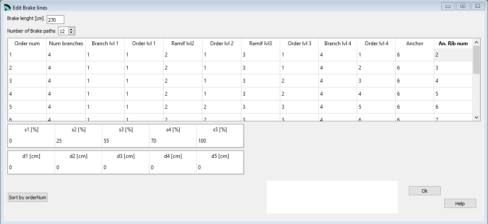

Brakes¶
In the Brakes window you can define the parameters from the 10 th section of the lep file, the line paths for the brake lines.
{kind=link}
Raw data:
***************************************************
* 10. BRAKES
***************************************************
270
12
4 1 1 2 1 3 1 4 1 6 2
4 1 1 2 1 3 1 4 2 6 3
4 1 1 2 1 3 2 4 3 6 4
4 1 1 2 1 3 2 4 4 6 5
4 1 1 2 2 3 3 4 5 6 6
4 1 1 2 2 3 3 4 6 6 7
4 1 1 2 2 3 4 4 7 6 8
4 1 1 2 2 3 4 4 8 6 9
4 1 1 2 3 3 5 4 9 6 10
4 1 1 2 3 3 5 4 10 6 11
4 1 1 2 3 3 5 4 11 6 12
4 1 1 2 3 3 5 4 12 6 13
* Brake distribution
0 25 55 70 100
0 0 0 0 0
Basically the definition of the line plan for the brake lines does follow the same scheme as the lines itself.
More about the Lines configuration you find here.
Need to know¶
The main brake lines are defined in level 1.
For the main lines the rib number is an integer, you can only attach main lines to the ribs itself. It is possible to attache the break lines somewhere between the ribs. To do so add a decimal to the rib number.
For example, 8.4 means anchor the line in the trailing edge, between rib 8 and 9, and 40% from the rib 8.
Length increments to brake lines¶
If needed you can increase the lenght of your brake lines. Therefore you can define 5 correction points along the wing vault.

s 1, 2, 3, 4, 5¶
Length along vault based on wing center.
d 1, 2, 3, 4, 5¶
Lengths increments in brake line.
Sort by Order Num¶
The button Sort by Order Num can be used to rearrange the definition lines. If for whatever reasons you will rearrange the lines, just define the numbering in an ascending order and press the Order button afterwards. Lepg will reorder the lines according to the numbering you’ve choosen.
A more detailed description you can find here Laboratori d'envol website.